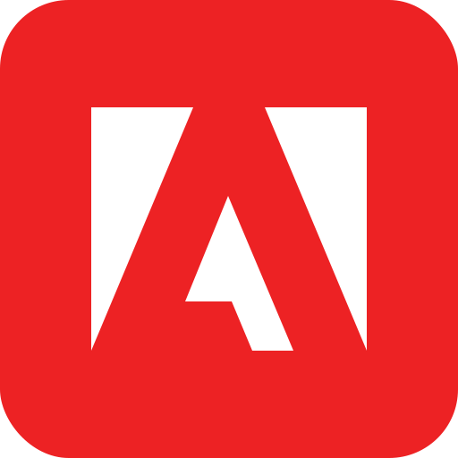

Front-end Development
- Front-end Development 2 year online studies at Noroff School of technology and digital media
Background
-
Javascript

-
HTML

-
CSS

Code
-
Bootstrap

-
Wordpress

Frameworks
-
Github

- Adobe (Photoshop, XD) 
-
Visual Studio Code

Programs
-
WCAG

-
Google Search Console (SEO)

Browser Integration
Portfolio
Vardeneset Idrettsforening
Description:
Hired to redesign and modernize the website. This involved changing hosting provider, building the site from scratch using bootstrap with a wordpress backend and adjusting the google search results to display the site accurately.
Project - Noroff
Description:
Second year first semester project for the Noroff Front-End development course. The goal was to create a working auction site meeting set project requirements using Noroff own API to interact with other users.
Project - Noroff
Description:
This project was completed in stages throughout the first year of the Noroff Front-End development course as part of the coursework and underwent many changes, initially the site being just HTML and CSS to finally having integrated wordpress api calls and javascript.
Project - Noroff
Description:
This site was the exam from the first semester of the first year at Noroff. Most of the copy was provided and the task was to build a site that would be user friendly and appealing to a younger demographic audience.
Project - Noroff
Description:
This was a one week submission during the second semester of the first year at Noroff to create a website generated by using publicly available API.
Project - Noroff
Description:
The year one exam project for the Noroff Front-End development course. The goal was to create a blog site using wordpress headless API to create the posts.